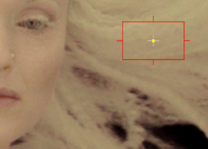
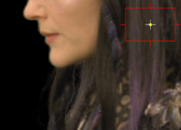

Although ChromaKeyer automatically despills the matte when you select a screen color, you may find that you can improve the matte by manually despilling the key using a despill bias or by replacing color at the edges of the matte.
The despill bias allows you to specify a color from the image, separate from the alpha bias, to improve the overall despill for the matte. Typically, you should pick skin tones or hair colors for the despill bias.
| 1. | Enable custom despill bias to allow you to use the despill bias controls. |
| 2. | Click the color swatch next to despill bias to activate the eye dropper. |
| 3. | Ctrl/Cmd+Shift+click and drag a rectangular area over the color you want to replace the highlighted pixels in the Viewer. This averages the pixels in the area selected to produce a better result. |
|
|
 |
|
Blue screen pixels present in a default matte. |
Selecting the hair color despills the blue pixels, producing a better matte. |
Improving a matte by adjusting the alpha channel can remove the wrong amount of screen color from the pixels where transparency has changed. The replace controls instruct ChromaKeyer how to deal with these pixels. The replace mode controls which pixels inherit the replace color.
| 1. | In the ChromaKeyer Properties panel, select the required replace mode using the dropdown: |
• ignore - the despilled image is left untouched if the alpha is modified. This is the default operation.
• edge hard color - the despilled image has a corresponding amount of the replace color added for any increase in alpha.
• edge linear color - the despilled image has a graded amount of the replace color, controled by a linear curve, added for any increase in alpha. Pixels closer to the background have more background bias and pixels closer to the foreground have more foreground bias.
• edge soft color - the despilled image has a corresponding amount of the replace color added for any increase in alpha, however, it attempts to modulate the luminance of the resulting pixel so that it matches the original pixel. This gives a more subtle result than the edge hard color option.
| 2. | Click the color swatch next to replace color to activate the eye dropper. |
| 3. | Ctrl/Cmd+Shift+click and drag a rectangular area over the color you want to replace the highlighted pixels in the Viewer. This averages the pixels in the selected area to produce a better result. |
NOTE: You can enhance the despill effect by enabling add-in matte fix to also apply the replace color to areas eroded or dilated by the white point and black point controls.
|
|
 |
|
Image with edge soft color highlighted. |
Highlighted pixels replaced by the color picked from the Viewer. |
| 4. | Use the replace amount slider to control how much of the replace color is applied. |
| 5. | Disable the premultiply control if you don't want the output premultiplied by the alpha channel. |
|
|